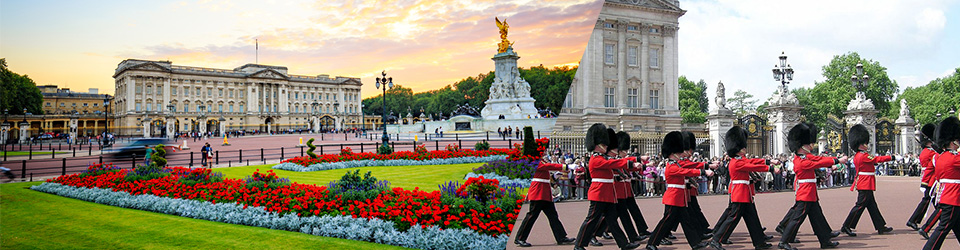
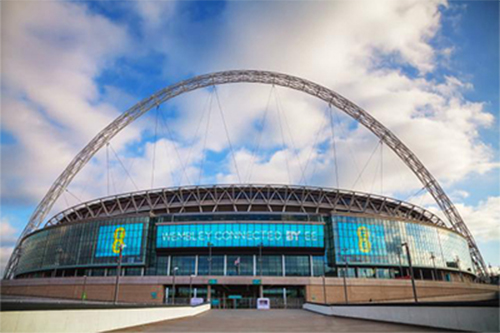
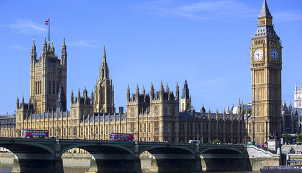
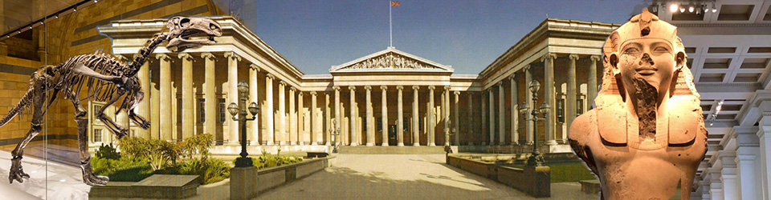
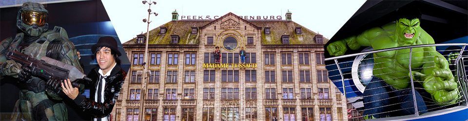

En esta sección te presentaremos un tour que consta de 6 ubicaciones las cuales fueron especialmente
seleccionadas bajo el fin de apreciar londres en algunas de sus principales facetas: admirar los palacios donde vive la monarquía británica y el lugar donde se toman las principales
decisiones políticas del reino unido, presenciar un estadio super moderno pero no por ello con poca
historia, museos con los que podrás viajar a través de la historia y conocer a tus personajes
favoritos del ayer y el hoy. Finalizamos el recorrido admirando desde lo alto de uno de los
rascacielos más reconocidos del mundo toda la belleza de la ciudad de Londres.
palacio de buckingham
La residencia oficial de la monarca británica en Londres. También se utiliza para ceremonias oficiales,
visitas de Estado y visitas turísticas. Es famoso por albergar una parte sustancial de la Royal
Collection, extraordinario conjunto de obras artísticas fruto del coleccionismo real. El palacio es un
punto de reunión de los británicos en tiempos de crisis y de festividad.

Estadio de Wembley
ubicado en el lugar donde se erigía el antiguo estadio con el mismo nombre construido en 1923. En el nuevo Wembley
juega como local la selección de fútbol de Inglaterra; es anualmente sede de las finales de la FA Cup, la Copa de
la Liga de Inglaterra y la Community Shield, además de varias finales de la Liga de Campeones de la UEFA.
El estadio también se puede apreciar en las películas 28 Weeks Later, de 2007, y Yesterday, de 2019.
además es poseedor de records de audiencia en deportes como: rugby, boxeo y pionero en llevar a la NFL fuera de américa
Tras la demolición en 2002 del viejo Wembley y con el diseño del arquitecto Norman Foster se abría la puerta a un
nuevo súper estadio con una capacidad de 90.000 espectadores, que terminó de construirse en 2007.

Palacio de Westminster
The Houses of Parliament, alberga las dos cámaras del Parlamento del Reino Unido (la Cámara de los Lores y la Cámara
de los Comunes). El palacio, que es de los cuatro lugares Patrimonio de la Humanidad de la ciudad de Londres,
declarado por la Unesco en 1987,
se encuentra situado en la orilla norte del río Támesis, en la ciudad de Westminster,
cerca de varios edificios gubernamentales en Whitehall.El palacio fue reconstruido después de un incendio en 1834, que destruyó la mayor parte de este. Los arquitectos
responsables de la reconstrucción del palacio fueron Charles Barry y Augustus Pugin. El edificio es un ejemplo del
estilo neogótico. Una de las características más notables del palacio es la torre del reloj, otra atracción turística
que alberga la campana llamada Big Ben, nombre asignado erróneamente al reloj de la torre.

Museo Britanico
The British Museum uno de los museos más importantes y visitados del mundo. Sus colecciones abarcan campos diversos del saber humano,
como la historia, la arqueología, la etnografía y el arte.El museo fue una de las primeras instituciones de este tipo en Europa, siendo el primer museo nacional en el mundo.
Custodia más de ocho millones de objetos de todos los continentes, muchos de los cuales se encuentran almacenados
para su estudio y restauración, o guardados por falta de espacio para exhibirlos. Cuenta con la mayor sala de lectura
de la Biblioteca Británica, biblioteca que, aunque ahora tiene sede propia, hasta el año 1973 también formaba parte
del museo, al igual que el Museo de Historia Natural de Londres, que cambió a sede propia en el año 1963.La sección del Antiguo Egipto es la más importante del mundo después de la del Museo Egipcio de El Cairo.La entrada al museo y a muchos de los servicios que ofrece —como el de la sala de lectura— es libre y gratuita,
a excepción de algunas exposiciones temporales.

Madame Tussauds London
El museo de cera más conocido en el mundo. Posee la colección más grande de figuras de celebridades.Marie Tussaud, de soltera Marie Grosholtz, fue una escultora de cera nacida el 1 de diciembre de 1761 en Estrasburgo,
Francia, y falleció en Londres el 16 de abril de 1850.
La técnica usada por Marie Tussaud para realizar sus obras fue a base de cera, la cual aprendió a modelar bajo la
enseñanza de su tutor Philippe Curtius mientras su madre trabajaba como su ama de llaves.
Al morir el doctor Curtius, Tussaud heredó toda su colección de figuras de cera. En 1835 la exhibición de Madame
Tussaud se estableció de manera permanente en Londres, a la cual se podía acceder pagando seis peniques. Madame
Tussaud esculpió los bustos de Necker y del Duque de Orleans. También fue autora de una escultura en cera de
Marie-Jeanne du Barry, la amante del rey Luis XV. También modeló los rostros de Marat, de Luis XVI y de Robespierre,
entre otros guillotinados, actualmente expuestos en la sección llamada "Cámara de los Horrores" del Museo Tussauds.

The view from the shard
Construido en tan solo cuatro años y gracias al arquitecto Renzo Piano, autor de algunos de los edificios más famosos
del mundo. Quien logró que Londres cuente ahora con un nuevo orgullo en forma de gran aguja. The Shard, ubicado
sobre la estación de transportes de London Bridge y es actualmente el edificio más destacado del skyline de Londres.
Pero, ¿Qué se ve realmente desde el The Shard? La parte de la ciudad que mejor se ve es la parte del Támesis en la
que se encuentran el Tower Bridge, la Torre de Londres, los rascacielos de la City y la Catedral de San Pablo, aunque
en un día claro se puede llegar a ver el London Eye e incluso el Buckingham Palace.